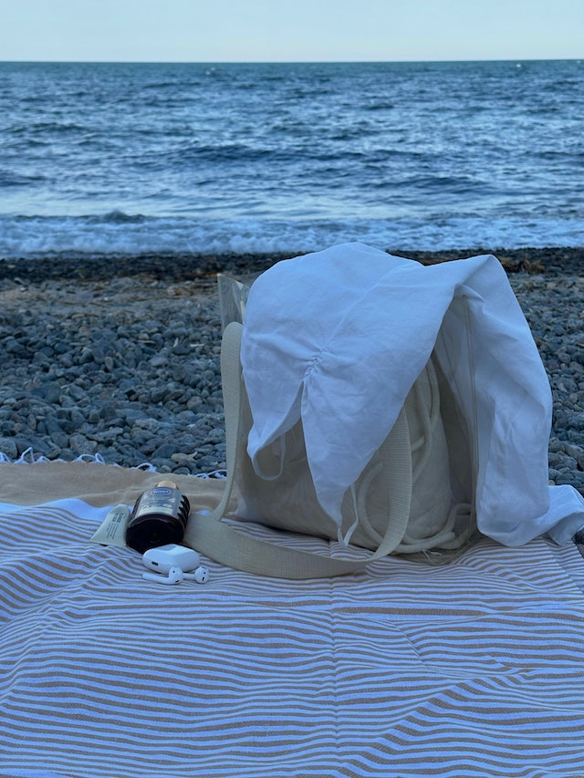
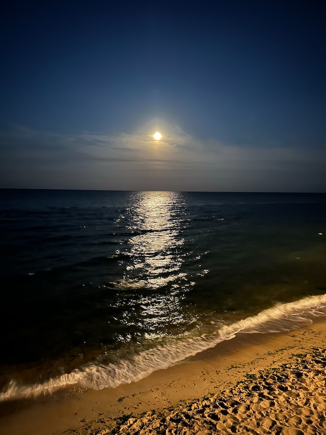
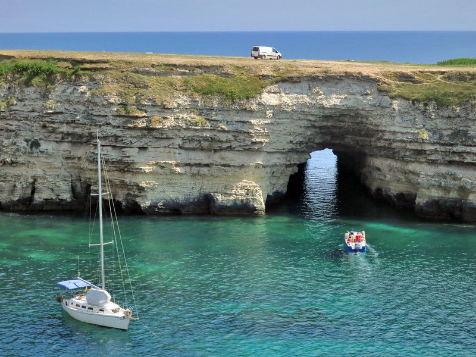
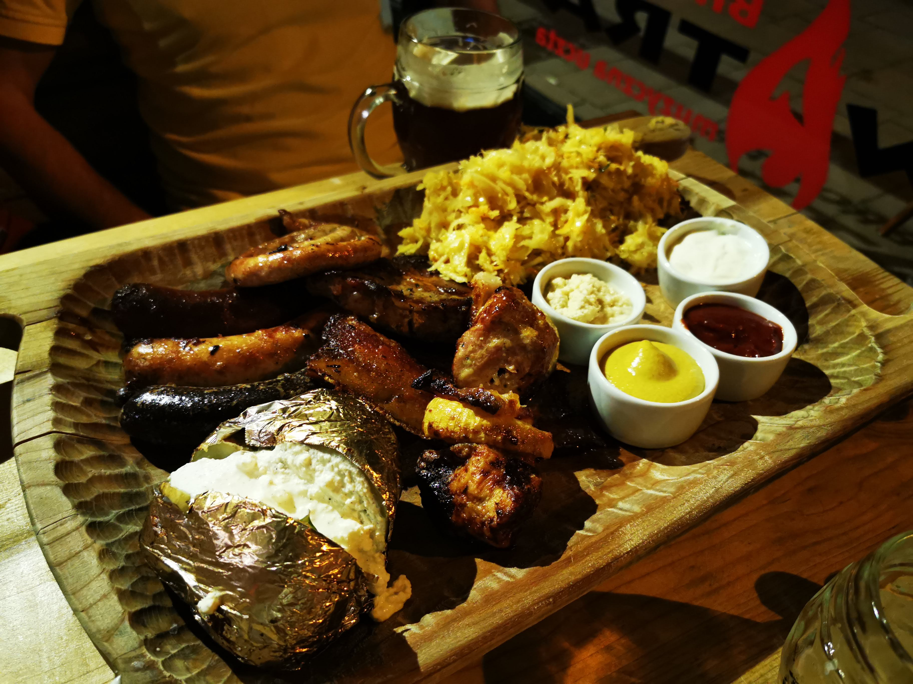
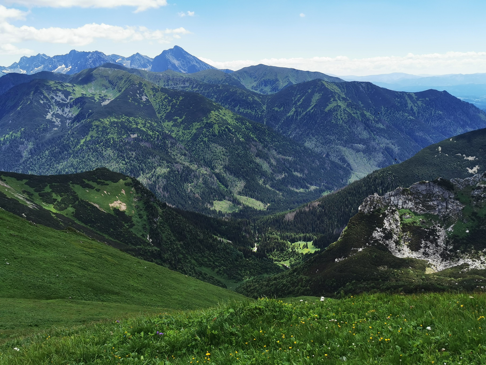
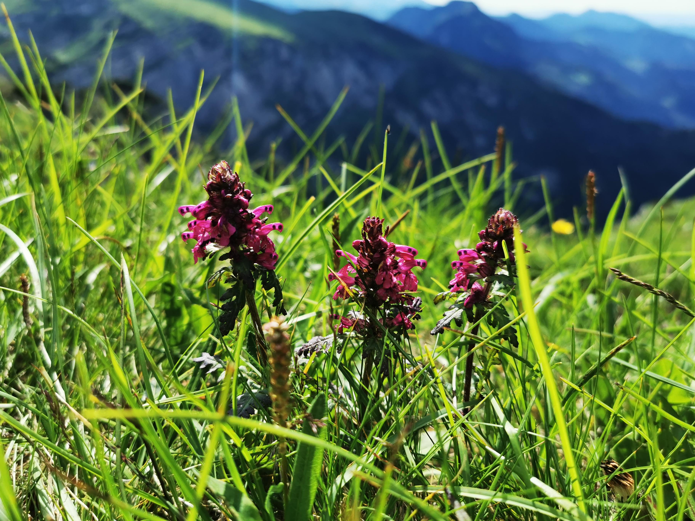

Наше життя таке, яким його роблять наші думки.
Марк Аврелій
Ваш час обмежений, тому не витрачайте його, живучи чужим життям. Не потрапляйте в пастку догм, живучи за поглядами інших людей. Не дозволяйте шуму думок інших людей заглушити ваш власний внутрішній голос. І головне, майте сміливість слідувати своєму серцю та інтуїції.
Стів Джобс
-
Про себе
Мене звати Олексій. Мені 50. Виріс я у мальовничому містечку Рахів що на Закарпатті. Багато разів міняв своє місце проживання . Може тому у мене є друзі майже в кожному куточку України. Більшість часу працював будівельником але так і не займався тим що було до серця блище . І лише зараз приділяю більше часу справжньому життю - гори , велік , лодка і друзі. Маю математичні схильності . Люблю задачі ))). Верстку я помітив на Youtube , випадково. Хворів , мав вільний час і зайнявся безкоштовним курсом . І я себе знайшов . Це те шо мені пасує за моїм складом розуму. І ось я з Вами !
-
Поіздки та відпочинки
-
Kрим Україна
   -
Kарконоші Польща


-
Татри Польща
  
-
-
освіта та навички
- середня школа #4 м.Рахів
- Львівський технікум промислової автоматики
- Самоосвіта